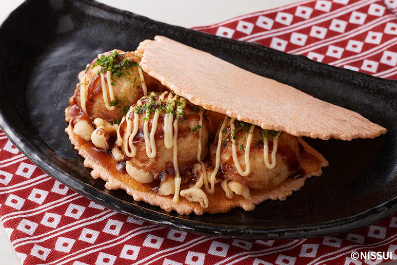

みんな大好き懐かしの味
網羅的な説明が書かれたコンテンツではなく、映画のようにこころを動かすコンテンツを目指しています。シナリオ作りから検証を重ねて作成しています。

たこせんもあります！
数十年の間に「ものづくり製品」から「ウェブサービス」へ時代が一変しましたが、更に時代は変化し続けます。画面の中だけの世界ではなく、リアルな世界に作用するものにこだわっています。

たこ焼きもご用意しております！
「ものものテック」では創業以来、毎年多数のリアルなハンズオンを企業・自治体・大学・各種イベント等で実施しています。リアルな教育でのエッセンスや最適化された難易度で皆さんの学びを加速します。